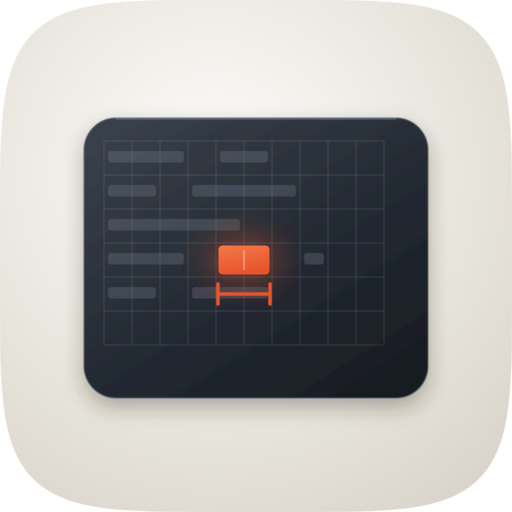

the master
 128
128 64
64 128
128 64
64 128
128 64
64 128
128 64
64Decorative marketplace tile, not an Icon Composer production package — the material has to be in the file because nothing downstream will add it. Three engines, master shipped from Engine A.

| Take | 128 / 64 / 48 / 32 / 16 css px | Verdict |
|---|---|---|
| Engine A — hand-authored SVG the master |
12864 |
SHIP |
| Engine B — Arrow vector | 12864 |
Flat — no light model, no contact shadow. Composition confirmed the metaphor reads; nothing salvaged into the master. |
| Engine C — Gemini raster (take 2) | 12864 |
Won the material read: the rim light and the glow bloom around the lit cell were both lifted into the master. Lost on geometry — one-cell glyph, so the metaphor collapses. |
| Engine C — Gemini raster (take 1) | 12864 |
Nested squircle inside a squircle — breaks the family silhouette. |
| Take | 32px source, magnified |
|---|---|
| Master |  |
| Engine C take 2 |  |
At 16–32px the master reduces to a dark rounded panel with a warm mark right of centre. That is the intended reduction: recognisable as a terminal, distinct from every other tile in the marketplace, and it does not attempt to keep the caliper.
| Check | Result |
|---|---|
| 1. Silhouette names the subject at 16px | PASS — dark panel + warm mark |
| 2. One metaphor, not two | PASS — measuring the cell grid |
| 3. Family silhouette (shared squircle path) | PASS — squircle-path.txt, clipped at the tile |
| 4. Optically centred | PASS — device inset 168/236, weight balanced |
| 5. ≤2 hue families | PASS — warm neutral ground + charcoal, one vermilion accent |
| 6. One light model | PASS — key from top-left; rim on top edge, shadow below |
| 7. Material present in the file | PASS — device gradient, glow bloom, contact shadow, rim |
| 8. Layer plan (bg / mid / fg / highlight) | PASS — ground / device / grid+runs / accent+caliper |
| 9. Distinct from siblings in the lineup | PASS — only landscape dark panel; nearest is should-compact's blocks |
| 10. No stock category glyph | PASS — not a terminal prompt chevron, not a gear |
| 11. Survives the 48px Finder/marketplace tile | PASS — accent still registers; caliper merges, which is acceptable |
| 12. Source is rebuildable | PASS — build_icon.py, geometry as named constants |
rsvg-convert. ImageMagick's internal SVG engine silently drops
the gradients and filters — it produced an all-black tile on the first pass, which is why the
build documents the renderer.